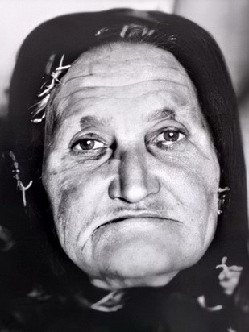

Устинья Михайловна Лоткова (Подковырова)

Родилась 10 октября 1897 г., в д. Краснояровка Борисоглебского уезда Тамбовской губернии, где и прошла почти вся её жизнь. Устинья была вторым ребёнком в семье и старшей из выживших детей. Её семья была многодетной и, насколько известно, довольно зажиточной. Тем не менее, согласно похозяйственной книге 1935 г., грамоты Устинья Михайловна не знала.
Не позже 1919 г. она вышла замуж за Андрея Лоткова, от которого родила пятерых детей. Их имена: Дарья (в замужестве Филимонова, 1920–2000), Мария (в замужестве Зайцева, 1922–2003), Иван (1925–2000), Виктор (1928) и Анна (в замужестве Рязанова, 1931–2009).
С приходом войны в доме Устиньи Михайловны произошла череда печальных событий. Сначала, в августе 1942 г., был призван на фронт её первенец Иван, а в ноябре того же года — и муж, Андрей Фёдорович. По каким-то причинам домой он уже не вернулся, и о его дальнейшей судьбе ничего неиз-вестно. Таким образом, вместе супруги прожили всего чуть больше 20 лет. Что же касается старшего сына, Ивана, то его боевой путь можно проследить по документам военных архивов. В рамках различных военных кампаний он прошёл путь вплоть до Вены, за что был удостоен нескольких военных наград. На службе он оставался вплоть до начала 1949 г. Младший сын Устиньи, Виктор, также был призван на фронт и даже был обучен на танкиста. Однако это случилось уже в последние месяцы войны, а потому в реальных военных действиях он не участвовал.
После войны дети Устиньи Михайловны разъехались по разным местам: Дарья переехала в Подмосковье, Виктор обосновался в Калининграде, Иван поселился в Кременчуге, а Мария и Анна до середины 1970-х гг. оставались в Краснояровке. Несмотря на это, дети и внуки Устиньи Михайловны регулярно её навещали.
Сама же Устинья Михайловна продолжила трудиться в местном колхозе, где занималась уборкой сахарной свёклы и другими работами в сельском хозяйстве. Кроме того, ей хорошо давалось рукоделье. Для себя и соседей она много шила, ткала и вязала. Дом Устиньи Михайловны был из кирпича и настолько добротным, что однажды пережил сельский пожар.
Примерно до 1970 г. Устинья Михайловна жила отдельно от детей и самостоятельно справлялась с хозяйством, но когда её здоровье ослабло, младшая дочь, Анна, забрала её жить к себе, а к 1975 г. вся семья, включая Устинью Михайловну, переехала в г. Уварово.
Там 17 марта 1975 г. она и умерла в возрасте 77 лет и была похоронена на кладбище в селе Подгорное Тамбовской области.